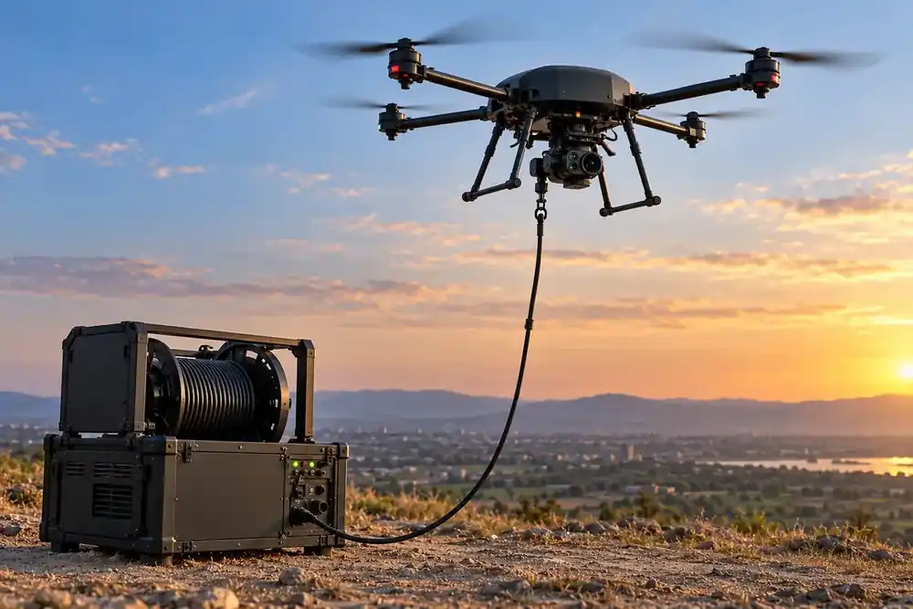

Home / Problems We Solve / Battery limits on overwatch
SecurityDrone battery too short? Tethered overwatch for long watches
Every free-flying drone must come down to recharge, which leaves a gap in what you can see.
How do you keep a drone in the air for longer?
For a fixed site, an event or a border post, the need is simple: keep watching. A battery-powered drone can only do that until it has to return, swap and take off again.
Every free-flying drone is limited by its battery. For a task that needs one steady view, each return to swap batteries leaves a gap.
A tethered drone takes power from the ground through a cable, so it can hold position far longer. The trade-off is that it stays over one spot, which makes it an overwatch tool, not a patrol tool.
Signs you have this problem
- You need one fixed view for hours, not a moving patrol
- Battery swaps leave gaps in coverage
- Radio interference is a concern at the site
- You want a raised viewpoint without building a mast
What to look for
- Continuous power through the tether
- A secure wired data link
- Quick set-up from a vehicle or the ground
- A clear plan for when you need to move instead
The main causes
Battery life
Flight time is the limit on every free-flying drone.
Handover gaps
Coverage stops while a drone lands, swaps and climbs again.
Radio links
Wireless video and control can be jammed.
Before and after
How to solve it, step by step
- 1
Set up
Place the ground unit on a vehicle or the ground.
- 2
Raise
The drone climbs on its cable to the viewing height.
- 3
Hold
Power flows up and video comes down the wire.
- 4
Watch
Keep a steady view of the perimeter, event or post.
Common questions
How long can a tethered drone fly?
It is not limited by a flight battery in the usual way, but real duration depends on the system, the conditions and maintenance needs. Ask us about your requirement.
Can a tethered drone be jammed?
Its wired data link is not affected by RF jamming, which is one of its main advantages.
When should I not use a tethered drone?
When you need to search or patrol. It cannot go beyond its cable, so use a free-flying drone for those jobs.
Related problems
GPS jamming and spoofing
Satellite signals are easy to jam, spoof or block, and a drone that depends on them can drift or be lost.
Read moreToo much ground, too few eyes
Borders, pipelines and large sites are too long to cover on foot or from fixed posts alone.
Read moreCorrecting artillery fire safely
Seeing where rounds land usually means putting a person at risk, and passing corrections back takes time.
Read moreFacing this problem?
Tell us about your mission and our engineers will suggest the right platform or configuration.